정보통신기사(구) (2009-05-10 기출문제)
1과목: 디지털 전자회로
1. 다음 중 연산증폭기를 사용한 회로의 출력(Vo) 파형으로 적합한 것은?
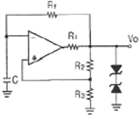
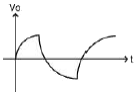
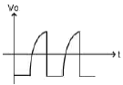
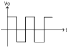
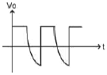
(정답률: 62%)

2. 다음 중 궤환 증폭기에서 입ㆍ출력 임피던스가 모두 증가되는 것은?
- Voltage shunt
- Current series
- Voltage series
- Current shunt
(정답률: 54%)
3. 다음 회로에서 전압 전달함수
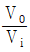
는? (단, R1=2R2, R3=R4)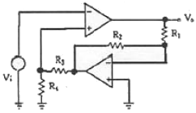
- -2
- -4
- 3
- 5
(정답률: 36%)
4. 다음 중 저주파 증폭기의 결합방식에 의한 분류에 해당하지 않는 것은?
- RC결합 증폭기
- 트랜스결합 증폭기
- 직접결합 증폭기
- 병렬결합 증폭기
(정답률: 28%)
5. 다음 중 차동증폭기의 설계 조건에 해당되지 않는 것은?
- 드리프트를 줄여야 한다.
- 차동 이득을 크게 해야 한다.
- 동상 이득을 크게 해야 한다.
- CMRR을 크게 해야 한다.
(정답률: 45%)
6. 그림과 같은 증폭회로의 이미터와 접지 사이에 저항 Re를 삽입할 경우 이에 대한 설명으로 옳은 것은?
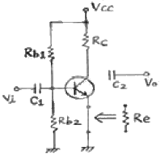
- 출력임피던스는 감소한다.
- 이득이 증가하고 일그러짐이 커진다.
- 입력임피던스와 이득이 모두 감소한다.
- 입력임피던스와 출력임피던스가 모두 커진다.
(정답률: 64%)
7. 그림과 같은 회로에서 Vo는 몇 [V]인가?
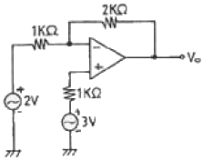
- 3[V]
- 4[V]
- 5[V]
- 6[V]
(정답률: 43%)
8. 4변수에 대한 카르노맵(Karnaugh map)이 그림과 같이 주어졌을 경우 이를 논리식으로 표현하면?
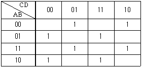
- A ⊕ B ⊕ C ⊕ D
- (A + B) ⊕ (C + D)
- (A ⊕ B) + (C ⊕ D)
- AB ⊕ CD
(정답률: 70%)
9. 그림과 같은 발진회로의 형태는?
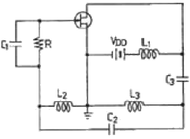
- 콜피츠(Colpitts) 발진회로
- 하틀레이(Hartley) 발진회로
- 동조형 발진회로
- 이상형(phase shift) 발진회로
(정답률: 79%)
10. 미분회로에 삼각파를 입력했을 때 나타나는 출력파형은?
- 정현파
- 톱니파
- 삼각파
- 구형파
(정답률: 58%)
11. 시미트 트리거(Schmitt trigger) 회로의 특징으로 틀린 것은?
- 단안정 멀티바이브레이터의 일종이다.
- 출력은 구형파 형태이다.
- 입력전압 크기로서 회로의 On, Off를 결정한다.
- 전압 비교회로 및 A/D 변환회로에 사용한다.
(정답률: 63%)
12. 논리식
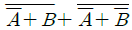
를 간단히 하면?- A
- B
- AB
- A+B
(정답률: 59%)
13. FET 드레인 접지형 증폭기의 특성을 설명한 내용으로 적합하지 않은 것은? (단, gm : FET의 상호 컨덕턴스)
- 출력 저항은 약 1/gm이다.
- 전압이득은 약 1이다.
- 입력 신호전압과 출력전압은 동상이다.
- 입력 저항이 매우 낮다.
(정답률: 60%)
14. 다음 OP Amp 회로의 전압증폭도
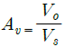
는?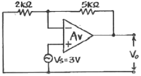
- 2.5
- 3.5
- 5.4
- 10.5
(정답률: 39%)
15. 불대수식
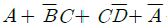
를 간단히 할 경우 옳은 것은?- 1
- A
- B
- C
(정답률: 60%)
16. 다음 중 Push-pull 전력 증폭기에서 출력 신호의 왜곡이 작아지는 주된 이유는?
- 기수차 고조파가 상쇄되기 때문이다.
- 우수차 고조파가 상쇄되기 때문이다.
- 기수차 및 우수차 고조파가 상쇄되기 때문이다.
- 직류성분이 없어지기 때문이다.
(정답률: 54%)
17. n개의 입력으로부터 2진 정보를 2n개의 독자적인 출력으로 변환이 가능한 것은?
- 멀티플렉서
- 디코더
- 계수기
- 비교기
(정답률: 47%)
18. 다음 중 병렬전압궤환 증폭기에서 궤환율 β는 약 얼마인가? (단, 출력전압 ≫ 입력전압이라고 가정한다.)
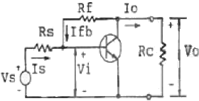
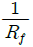
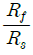
- Rf
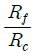
(정답률: 60%)
19. 다음 중 그림의 RC 이상발진기에서 발진 주파수 fo 로 적합한 것은?
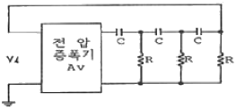
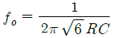
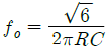
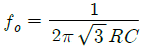
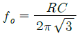
(정답률: 50%)
20. 그림의 회로에서 RL=100[Ω], ab에서 본 부하저항 Rab는 10[kΩ]이다. 이상적인 변압기에서 권선비
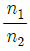
는?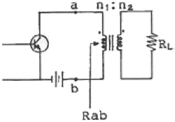
- 100
- 10
- 0.1
- 0.01
(정답률: 46%)
2과목: 정보통신 시스템
21. 다음 중 떨어진 지역의 컴퓨터를 통신 회선을 이용하여 결합하고 정보를 공유함으로써 컴퓨터의 기능과 처리면에서 전체 시스템의 성능과 신뢰성을 향상시키는 방식은?
- 분산처리방식
- 시분할처리방식
- 오프라인처리방식
- 일괄처리방식
(정답률: 73%)
22. 다음 프로토콜 중 OSI 7계층의 애플리케이션 계층에 해당하지 않는 것은?
- SMTP
- ADCCP
- Virtual Terminal
- FTAM
(정답률: 29%)
23. 다음 중 인터넷에서 트랜스포트 계층의 비연결형 서비스 프로토콜은?
- UDP(User Datagram Protocol)
- TCP(Transmission Control Protocol)
- IP(Internet Protocol)
- ICMP(Internet Control Massage Protocol)
(정답률: 67%)
24. 50개의 국간을 망형으로 연결하기 위한 필요 회선수는?
- 50
- 49
- 1025
- 1225
(정답률: 88%)
25. 다음 중 계층화된 통신구조를 통한 데이터 전송시 상위계층에서 하위계층으로 데이터를 전달할 때 필요한 정보를 부가하는 과정은?
- Fragmentation
- Multiplexing
- Encapsulation
- Sequencing
(정답률: 74%)
26. 정보통신시스템의 기본 구상에서 데이터 전송계에 속하지 않는 것은?
- 데이터 처리시스템
- 데이터 전송회선
- 단말장치
- MODEM
(정답률: 72%)
27. 패킷교환에서 데이터그램(datagram)방식에 대한 설명으로 틀린 것은?
- 메시지내의 각 패킷들은 독립적으로 교환 처리된다.
- 가상회선방식보다 호출설정의 시간 지연이 크다.
- 수신단에서 각 패킷의 재구성이 필요하다.
- 각 패킷마다 어드레스 정보를 포함한다.
(정답률: 65%)
28. ATM 기술에 대한 설명으로 틀린 것은?
- 고정 길이의 셀 단위로 통신한다.
- 가변길이의 메시지 단위로 전송한다.
- 상위 계층 정보를 셀 단위의 길이로 절단, 조립하는 것은 AAL 계층의 기능이다.
- 다양한 종류의 트래픽을 통합할 수 있다.
(정답률: 50%)
29. 다음 중 광 전송에서 광원과 광섬유의 결합효율을 예측할 수 있는 파라미터가 아닌 것은?
- 비굴절율차
- 수광각
- 개구수
- 최적비
(정답률: 62%)
30. ITU-T가. X.25 패킷 교환망의 데이터링크 프로토콜로 채택한 것은?
- ADCCP
- SDLC
- LAP-B
- LAP-D
(정답률: 70%)
31. 계층간의 통신에 대한 모델에서 네트워크의 다른 지역에 있는 대등 실체에게 보내지는 정보로 그 실체에게 어떤 서비스 기능을 수행하도록 지시하는 프로토콜 제어정보를 의미하는 것은?
- SDU
- IDU
- PCI
- ICI
(정답률: 32%)
32. 다음 중 데이터링크 계층까지의 기능을 수행하는 동종의 네트워크를 연결하는데 이용되는 것은?
- Bridge
- Repeater
- Router
- Gateway
(정답률: 79%)
33. 기업간 거래정보를 컴퓨터망을 이용한 전자적 수단으로 처리하는 것은?
- WAN
- EDI
- RJE
- FTAM
(정답률: 90%)
34. 광통신방식에서 광신호를 전기적 세력으로 변환해 주는 소자는?
- LD, LED
- LD, APD
- LED, APD
- APD, PD
(정답률: 77%)
35. 다음 중 광섬유 케이블의 일반적인 특징이 아닌 것은?
- 초다중화가 가능하다.
- 채널간 상호 전자기적인 누화의 영향을 받을 수 있다.
- 광대역전송이 가능하다.
- 광섬유는 측압을 받으면 손실특성이 달라진다.
(정답률: 알수없음)
36. 다음 중 동일한 기지국내 섹터간의 핸드오버는?
- Hard 핸드오버
- Soft 핸드오버
- Softer 핸드오버
- Reay 핸드오버
(정답률: 53%)
37. TCP/IP 네트워크 상에서 IP 주소를 물리적 네트워크 주소로 대응시키기 위해 사용되는 프로토콜은?
- ARP
- ICMP
- SLIP
- PPP
(정답률: 68%)
38. 다음 중 TMN 통신망 관리의 기능에 속하지 않는 것은?
- 운용관리(Operations Management)
- 고장관리(Fault Management)
- 성능관리(Performance Management)
- 보안관리(Security Management)
(정답률: 43%)
39. 다음 DATA 전송제어문자의 내용이 적합하지 않은 것은?
- SOH : 헤딩의 시작
- STX : 텍스트의 시작
- ETX : 텍스트의 종료
- ETO : 전송의 종료
(정답률: 63%)
40. ITU-T의 V시리즈는 무엇을 대상으로 하는 표준안 인가?
- 전화망을 통한 데이터통신
- 신호방식에 관한 데이터통신
- 망간 접속에 관한 데이터통신
- 메시지 처리에 관한 데이터통신
(정답률: 70%)
3과목: 정보통신 기기
41. 경로에 따른 전자파의 분류에서 지상파가 아닌 것은?
- 대류권 산란파
- 직접파
- 대지 반사파
- 회절파
(정답률: 62%)
42. 다음 중 고속의 송신 신호를 다수의 직교하는 협대역의 반송파로 다중화 시키는 변조방식은?
- QAM
- CDMA
- OTDM
- OFDM
(정답률: 80%)
43. 다음 중 G3 Fax의 설명으로 거리가 먼 것은?
- 디지털 전송방식을 이용한다.
- 수직방향의 표준 해상도는 3.85[선/㎜]이다.
- A4 용지를 1분대에 전송한다.
- 압축 부호와 방식으로 MMR을 적용한다.
(정답률: 50%)
44. 다음 중 전화 교환기의 제어방식이 아닌 것은?
- 단독 제어방식
- 공통 제어방식
- 축적프로그램 제어방식
- 종합 제어방식
(정답률: 80%)
45. 전화기의 푸시버튼 다이얼 방식 중 특수 서비스 기능이 아닌것은?
- 단축 다이얼 기능
- 확산통화 전환 기능
- Tone/Pulse 전환 기능
- 통화 중 대기 기능
(정답률: 43%)
46. 반송파로 사용하는 정현파의 진폭에 정보를 싣는 변조 방식은?
- FSK
- ASK
- PSK
- PCM
(정답률: 60%)
47. 다음 중 위성 중계기의 구성요소가 아닌 것은?
- 송신부
- 수신부
- 헤드엔드
- 주파수 변환부
(정답률: 85%)
48. 다음 중 LAN에서 리피터(Repeater)의 설명으로 틀린 것은?
- 신호 재생시 기본적 기능인 3R 기능을 수행한다.
- 물리계층 레벨의 DATA를 전송한다.
- 네트워크 케이블을 단축하고 WAN을 확장할 수 있다.
- 프레임이나 패킷의 내용에 무관하며 신호레벨로 중계한다.
(정답률: 75%)
49. 다음 중 이동통신분야에서 사용되는 다원접속방식이 아닌 것은?
- CSMA
- TDMA
- CDMA
- FDMA
(정답률: 65%)
50. 다음 설명에 해당되는 단말의 표시장치는?
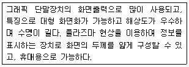
- LCD
- CRT
- PDP
- EC
(정답률: 알수없음)
51. 디지털 회선에 디지털 데이터의 형태로 전송할 때 필요한 것은?
- DTE
- DCE
- DSU
- CCU
(정답률: 74%)
52. 통신제어장치의 기능에 대한 가장 적합한 설명은?
- 회선에 적합한 형태로 신호의 상호변환
- 중앙처리장치와 데이터 전송회선간 데이터 송수신제어
- 통신회선의 주파수 및 위상의 특성 제어
- 메모리장치의 데이터 버스 제어
(정답률: 50%)
53. 비디오텍스에서 점, 선, 호, 다각형과 같은 기하학적 요소의 조합에 의해 표현되는 방식은?
- 알파 포토그래픽 방식
- 알파 지오메트릭 방식
- 알파 모자이크 방식
- 알파 혼합 방식
(정답률: 88%)
54. 다음 중 X.400의 권고안에 따른 전자우편 시스템은?
- MHS
- Teletex
- CATV
- VAN
(정답률: 84%)
55. 다음 중 순환잉여검사(CRC)에 의한 에러검출을 사용하지 않는 것은?
- BSC
- Frame Relay
- HDLC
- X.25
(정답률: 34%)
56. 디지털셀룰러 방식에서 페이딩에 의한 군집성 오류(Burst Error)를 극복하기 위하여 오류정정부호와 함께 사용하는 기술은?
- 등화기술
- 인터리빙기술
- 간섭제거기술
- 다이버시티기술
(정답률: 75%)
57. 셀룰러 이동통신 시스템의 구성요소가 아닌 것은?
- MS(Mobile Station)
- BS(Base Station)
- PCN(Personal Communication Network)
- MTSO(Mobile Telephone Office)
(정답률: 77%)
58. 다음 중 HDTV의 일반적인 설명으로 옳은 것은?
- 주사선 수는 525 이다.
- 화면의 세로:가로는 3:4 이다.
- 음성품질은 CD급 수준이다.
- 변조방식은 영상신호 AM-SSB, 음성신호는 FM 이다.
(정답률: 64%)
59. 다음 중 회선교환의 특징으로 잘못 설명된 것은?
- 요금은 데이터량에 비례한다.
- 메시지는 저장되지 않는다.
- 실시간 전송이 요구되는 음성 트래픽에 적합하다.
- 경로가 점유되며, 고정대역폭 전송이 가능하다.
(정답률: 67%)
60. 다음 중 SSB 변조방식이 DSB 변조방식에 비해 장점이 아닌것은?
- 대역폭이 적어 다중 통신에 적합하다.
- 선택성 페이딩의 영향을 덜 받는다.
- 비화성이 없다.
- S/N 비가 향상된다.
(정답률: 54%)
4과목: 정보전송 공학
61. 다음 중 광섬유를 SIF 및 GIF로 분류하는 것은 무엇에 따른 것인가?
- 코어의 굴절률 분포 형태
- 클래드와 굴절률 분포 형태
- 코어와 클래드 사이의 굴절률 분포 형태
- 클래드와 코팅층 사이의 굴절률 분포 형태
(정답률: 54%)
62. 다음 중 파장분할다중화(WDM) 기술에 대한 설명으로 적합하지 않은 것은?
- 광섬유 손실이 적은 1310[㎚] 영역이 주로 사용된다.
- 장거리 전송을 위해 EDFA 등 광 중폭기가 필수적으로 필요하다.
- 여려 채널을 광학적으로 다중화하여 한 개의 광섬유를 통해 전송한다.
- 변조방법, 아날로그/디지털 등의 전송 형태에 관계없이 어떠한 광신호의 전달에도 이용될 수 있다.
(정답률: 39%)
63. 전송하고자 하는 총 비트 수가 72개 일 때 해밍 비트 수는 몇 개 인가?
- 4
- 5
- 6
- 7
(정답률: 59%)
64. HDLC 프로토콜의 프레임 구조에서 프레임이 잘 전송되었는 지 확인하기 위한 에러 검출용 16비트 코드로 구성된 것은?
- FCS
- Flag
- 제어부
- 주소부
(정답률: 71%)
65. HDLC 프로토콜에서 복합국끼리 상대방의 허가 없이 데이터 전송을 할 수 있는 동작 모드는?
- 폴링 모드
- 정규 응답 모드
- 비동기 균형 모드
- 비동기 응답 모드
(정답률: 30%)
66. 다음 베이스 밴드 전송방식 중 저주파 차단왜곡이 가장 적은 신호방식은?
- 단류방식
- 단류 RZ방식
- 바이폴라방식
- 복류방식
(정답률: 24%)
67. 다음 중 광섬유의 분산에 대한 설명으로 적합하지 않은 것은?
- 분산에는 색분산과 모드분산이 있다.
- 색분산은 재료분산과 구조분산이 있다.
- 다중모드 광케이블에는 색분산과 모드분산이 존재한다.
- 재료분산은 파장의 폭을 갖는 광펄스 입사시 빛의 전파 경로 길이가 파장에 따라 잘라져 발생한다.
(정답률: 22%)
68. 다음 중 동기식 전송방식에 대한 설명으로 가장 적합한 것은?
- 데이터의 앞쪽에 반드시 비동기문자가 온다.
- 각 극자는 시작 비트와 정지 비트를 갖는다.
- 한 묶음으로 구성하는 글자들 사이에는 휴지기간이 있을 수 있다.
- 회선의 효율을 증가시키기 위해 문자 또는 비트들의 데이터 블록 단위로 송수신한다.
(정답률: 40%)
69. k번째 표본화 시간에서 표본값 m(t)와 표본시간(k-1)에서의 표본값 m(k-1)사이의 차를 보통 4-5 비트 양자화를 수행하는 변조방식은?
- DM
- ADM
- PCM
- DPCM
(정답률: 47%)
70. 전송제어를 위해 하이브리드 ARQ 라는 효율적인 방법이 제안되고 있는데 이것은 무엇과 무엇의 하이브리드 인가?
- ARQ와 FEC
- 연속 ARQ와 정지 ARQ
- ARQ와 변조방식
- 정지 ARQ와 적응적 ARQ
(정답률: 48%)
71. 다음 중 데이터링크계층의 역할로서 옳지 않은 것은?
- 노드 대 노드 전달을 책임진다.
- 이 계층에서 추가된 트레일러 부분에는 다음 차례로 접근할 노드의 목적지 주소 등의 포함된다.
- 이 계층을 프로토콜은 일반적으로 오류가 발생한 프레임을 검출하고 이를 재전송하는 방법 등을 포함한다.
- 데이터 동기를 제공하며 비트들을 식별하는 기능을 제공함으로써 채널상으로 데이터를 전송하는 책임을 진다.
(정답률: 57%)
72. 전용회선의 전송특성 열화 요인 중 정상 열화 요인에 속하지 않는 것은?
- 누화
- 위상지터
- 랜덤잡음
- 진폭히트
(정답률: 37%)
73. 다음 중 전송부호가 가져야 하는 조건으로 적합하지 않은 것은?
- DC 성분이 포함되지 않아야 한다.
- 전송부호의 코딩효율이 양호해야 한다.
- 전력밀도 스펙트럼 상에서 아주 높은 주파수 성분도 포함해야 한다.
- 누화, ISI, 왜곡 등과 같은 각종 장해에 강한 전송 특성을 가져야 한다.
(정답률: 50%)
74. 수신한 마이크로파를 중간주파수로 변환하고 검파하여 음성 또는 영상 신호로 만든 후 다시 마이크로파로 변조하여 송신하는 중계방식은?
- 직접중계방식
- 검파중계방식
- 무급전 중계방식
- 헤테로다인 중계방식
(정답률: 39%)
75. 16진 QAM 변조기에서 레벨변환기에 2개의 입력신호가 들어가면 레벨변환기 출력에는 몇 개의 신호가 나오는가?
- 2개
- 4개
- 8개
- 16개
(정답률: 38%)
76. 4진 PSK 변조방식을 사용하는 모뎀에서 데이터 신호 속도가 9600[bps] 일 때 변조속도는 몇 [baud]인가?
- 1200[baud]
- 2400[baud]
- 4800[baud]
- 9600[baud]
(정답률: 37%)
77. 다음 중 STP 케이블에 대한 설명으로 적합하지 않은 것은?
- UTP 케이블에 비해 더 비싸다.
- UTP 케이블보다 유연하며 설치가 쉽다.
- UTP 케이블보다 최대 전송가능 속도가 높다.
- UTP 케이블보다 외부의 전기적 간섭에 영향을 덜 받는다.
(정답률: 42%)
78. 다음 중 정합필터에 대한 설명으로 적합하지 않은 것은?
- 하나의 곱셈기와 하나의 적분기로 구현할 수 있다.
- 디지털 통신에서 등가적으로 S/N 비를 향상시킬 목적으로 사용된다.
- 정합 필터의 오류 확률은 단극 RZ의 오류 확률과 같다.
- 최적 임계값은 정합필터의 입력신호가 가지는 에너지의 반이다.
(정답률: 45%)
79. 다음 중 지터에 대한 설명으로 적합하지 않은 것은?
- 타이밍 편차 또는 지터 잡음이라 한다.
- 펄스열이 왜곡되어 타이밍 펄스가 흔들려서 발생한다.
- 타이밍회로의 동조가 부정확하여 발생한다.
- 일정 구간 마다 재생중계기에 의해 제거되므로 누적되지 않는 잡음이다.
(정답률: 62%)
80. CEPT 방식 PCM 디지털 하이어라키의 4, 5계위에서 사용되는 전송부호는?
- AMI
- CMI
- B3ZS
- B6ZS
(정답률: 42%)
5과목: 전자계산기일반 및 정보통신설비기준
81. BCD 코드 1001에 대한 해밍 코드를 구하면? (단, 짝수 패리티 체크를 수행한다.)
- 0011001
- 1000011
- 0100101
- 0110010
(정답률: 67%)
82. 다음 중 하드웨어 신호에 의하여 특정 번지의 서브루틴을 수행하는 것은?
- vectored interrupt
- handshaking
- DMA
- subroutine
(정답률: 54%)
83. 캐시 접근시간 100㎲, 주기억장치 접근시간 1000㎲, 히트율 0.9인 컴퓨터 시스템의 평균 메모리 접근 시간은?
- 90㎲
- 100㎲
- 190㎲
- 990㎲
(정답률: 44%)
84. 마이크로프로세서는 내부 레지스터의 길이, 데이터 버스의 구조, 내부 메모리의 크기 등에 의해 그 성능이 평가된다. 다음 중 가장 성능이 낮은 마이크로프로세서는 어느 것인가?
- 80486(intel사)
- 68000(Motorola사)
- R3000(MIPS사)
- RS/6000(IBM사)
(정답률: 37%)
85. 다음 중 Linux 운영체제의 특징과 가장 거리가 먼 것은?
- 소스 코드가 공개되어 있으므로 사용자들은 자신이 원하는 기능을 추가하거나 변경할 수 있다.
- 명령어 체계나 사용법, 대부분의 도구들까지도 Unix와 유사한 형태를 띠고 있다.
- 서버용 소프트웨어를 기본으로 제공하며 사용자들이 취향에 맞도록 관련 유틸리티들을 포함하고 있다.
- freeBSD와 비슷한 시기에 개발되었으며, 이식성에 중점을 두고 개발되어 가장 다양한 플랫폼을 지원하고 있다.
(정답률: 50%)
86. 다음 중 10진수로 변환한 값이 다른 것은?
- 2421 코드 : 0110
- 8421 코드 : 0110
- Excess-3 코드 : 1001
- Biquinary 코드 : 1000100
(정답률: 50%)
87. 다음 중 선점 스케줄링에 대한 설명으로 옳은 것은?
- 한 프로세스가 실행되면 완료될 때까지 프로세서를 차지한다.
- 작업시간이 짧은 작업이 긴 작업을 기다리는 경우가 발생할 수도 있다.
- 프로세스의 종료시간에 대해 예측이 가능하다.
- 빠른 응답시간을 요구하는 시분할 시스템, 실시간 시스템에 적합하다.
(정답률: 45%)
88. GNU 일반 공중 사용 허가서에 저작권의 한 부분으로 보장한 내용이 아닌 것은?
- 컴퓨터 프로그램의 원본을 언제나 프로그램 코드와 함께 판매 또는 무료로 배포할 수 있다.
- 컴퓨터 프로그램을 어떠한 목적으로든지 사용할 수 있다.
- 컴퓨터 프로그램의 코드를 용도에 따라 변경할 수 있다.
- 변경된 컴퓨터 프로그램 역시 프로그램의 코드와 함께 자유로이 배포할 수 있다.
(정답률: 39%)
89. 기억장치의 주소와 그 내용이 다음의 표와 같다고 할 때, 어셈블리어로 LOAD 120 이란 명령이 직접 주소 방식이라면 오퍼랜드는 무엇이 되는가?
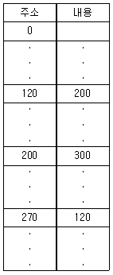
- 120
- 200
- 270
- 300
(정답률: 62%)
90. 명령 사이클의 설명으로 올바른 것은?
- 명령어의 인출단계
- 명령어의 실행단계
- 명령어의 인출에서 실행까지의 전체 과정
- 명령어의 인출과 해독 단계
(정답률: 47%)
91. 다음 중 정보통신공사업자 이외의 자가 시설할 수 있는 경미한 공사에 해당하지 않는 것은?
- 간이무선국의 무선설비설치공사
- 인입되는 국선이 10회선 이상인 건축물의 구내통신선로 설비공사
- 연면적 1천제곱미터 이하의 건축물의 자가유선 방송설비의 설비공사
- 허브의 증설을 수반하지 아니하는 5회선 이하의 근거리 통신망 선로의 증설공사
(정답률: 43%)
92. 다음 중 방송통신위원회가 전기통신기본계획을 수립하고자 하는 경우에 미리 관계 행정기관의 장과 협의하여야 하는 사항은?
- 전기통신사업에 관한 사항
- 전기통신의 질서유지에 관한 사항
- 전기통신기술의 진흥에 관한 사항
- 전기통신의 이용효율화에 관한 사항
(정답률: 54%)
93. 다음 중 정보통신부장관의 전기통신기술진흥을 위한 시행 계획에 포함되지 않는 사항은?
- 전기통신기술의 연구, 개발에 관한 사항
- 전기통신기자재의 국산화에 관한 사항
- 전기통신기술의 표준화에 관한 사항
- 전기통신기술의 국제협력에 관한 사항
(정답률: 53%)
94. 전기통신을 행하기 위하여 계통적·유기적으로 연결·구성된 전기통신설비의 집합체를 말하는 것은?
- 정보통신망
- 정보설비망
- 전기통신망
- 전기설비망
(정답률: 56%)
95. 다음 중 정보통신공사업의 등록을 할 수 있는 자는?
- 금치산자 및 한정치산자
- 파산선고를 받고 복권되지 아니한 자
- 정보통신공사업법의 규정에 의하여 벌금형의 선고를 받고 2년을 경과하지 아니한 자
- 정보통신공사업법의 규정에 의하여 등록이 취소된 후 3년이 경과한 자
(정답률: 31%)
96. 다음 중 우리나라 전기통신사업의 구분에 속하지 않는 것은?
- 특정통신사업
- 기간통신사업
- 별정통신사업
- 부가통신사업
(정답률: 64%)
97. 터널식 통신구 공사의 하자담보책임기간은?
- 1년
- 3년
- 5년
- 7년
(정답률: 34%)
98. 다음 중 정보통신공사업법에 의한 감리원의 업무범위가 아닌것은?
- 공사계획 및 공정표의 검토
- 공사 관련 인원의 지휘, 통솔
- 설계변경에 관한 사항의 검토ㆍ확인
- 공사업자가 작성한 시공 상세도면의 검토ㆍ확인
(정답률: 알수없음)
99. 다음 ( ) 안에 들어갈 내용으로 가장 적합한 것은?
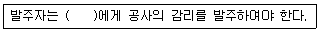
- 설계업자
- 용역업자
- 감리업자
- 공사업자
(정답률: 25%)
100. 다음 ( ) 안에 들어갈 내용으로 가장 적합한 것은?
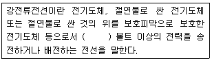
- 110
- 220
- 300
- 600
(정답률: 65%)